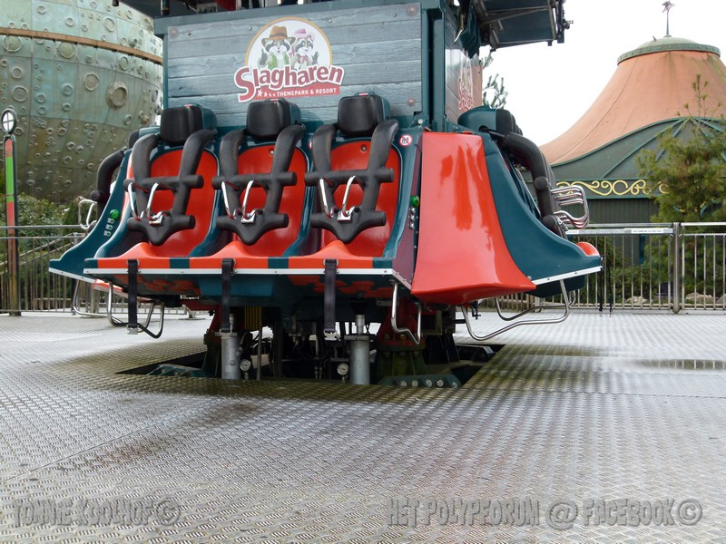
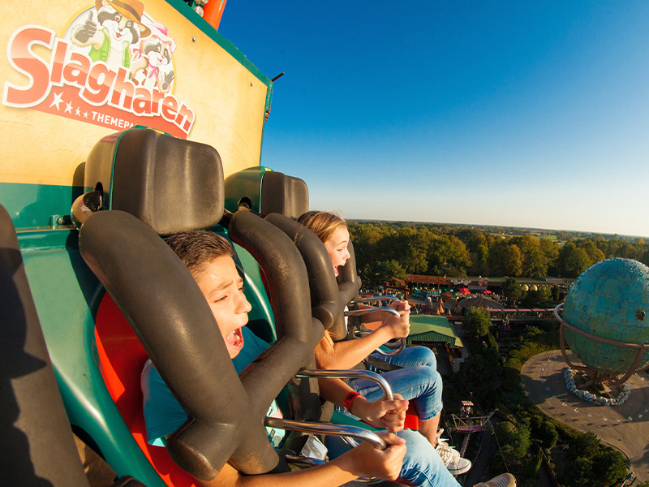
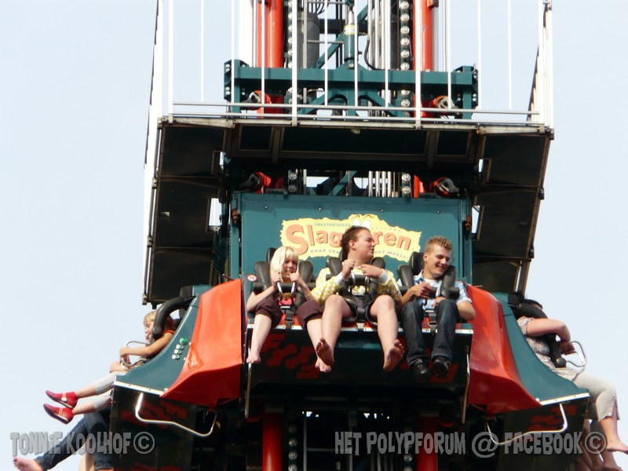

<DOCTYPE html>
<html>
<head>
<meta charset="utf-8">
<title> Free-Fall </title>
</head>
<body>
<header>
<h1> Attractiepark Slagharen </h1><hr><br>

</header>
</body>
</head>
</html>
<!DOCTYPE html>
<html>
<head>
<ul>
<a href="https://website.slagharen.com/nl" target="_blank">www.slagharen.com/nl</a>
<br>
<a href="https://website.slagharen.com/en" target="_blank">www.slagharen.com/en</a>
<br>
<a href="https://website.slagharen.com/de" target="_blank">www.slagharen.com/de</a>
</ul>
</head>
</html>
<!DOCTYPE html>
<html>
<head>
<DOCTYPE html>
<html>
<head>
<meta charset="utf-8">
<title> Free-Fall index </title>
</head>
<body>
<br><hr><h1><figcaption> Free-Fall </figcaption></h1><hr><br>
<p>Wil je weten hoe het is om gewichtloos te zijn? Ervaar het zelf in de Free Fall! </p>
<p>Eerst wordt je naar een hoogte van 40 meter gehesen. Dan is het even heel erg stil. </p>
<p>Je kan daarboven een speld horen vallen. </p>
<p>Je houdt je adem in en voor je het weet duik je met z'n allen naar beneden. </p>
<p>Met een duizelingwekkende snelheid ben je beneden aangekomen. Wat een gevoel om gewichtloos te zijn! </p>
<p>Gelukkig zat je stevig vast en voor je het weet sta je weer met beide benen op de grond! </p>
<p>Durf jij het aan? </p>
</body>
</head>
</TABLE>
<iframe width="560" height="315"
src="https://nl.wikipedia.org/wiki/Free_Fall_(Slagharen)"
title="slagharen"
frameborder="0" allow="accelerometer; autoplay; clipboard-write;
encrypted-media; gyroscope; pic-ture-in-picture" allowfullscreen>
</iframe>
</head>
</html>
<DOCTYPE html>
<html>
<head>
<meta charset="utf-8">
<body>
<br><hr><h1><figcaption> Free-Fall foto's </figcaption></h1><hr><br>
<headers>
<section>



</headers>
</section>
</head>
</html>
<DOCTYPE html>
<html>
<body>
  <div>
<audio controls
src="https://www.mediacollege.com/downloads/sound-effects/people/scream/scream-kids-01.wav" </audio>
</div>
</body>
</html>
<DOCTYPE html>
<html>
<head>
<body>
<br><hr><h1><figcaption> Free-Fall informatie </figcaption></h1><hr><br>
<h1> Openingstijden </h1>
<p> Geopend van 10.00 - 18.00 uur </P>
<p><h1>Toegangsprijzen attractiepark</h1>
Attractiepark Slagharen heeft een dynamisch prijsbeleid waardoor tickets per dag kunnen variëren in prijs.</p>
<p> De prijs is afhankelijk van de dag en periode waarin je een bezoek wilt brengen.</p>
<p> Bestel 5 dagen of meer voorafgaand aan je bezoek online jouw tickets en ontvang korting op de kassaprijs.</p>
<p><h4>Kinderen tot en met 3 jaar hebben gratis toegang.</h4></p>
<p><h1> Bezoekadres </p></h1>
<p> Attractie- & Vakantiepark Slagharen</p>
<p> Zwarte Dijk 37</p>
<p> 7776 PB Slagharen</p>
</body>
<section>
<iframe width="560" height="315" src="https://www.youtube.com/embed/Y1FoCXgannw"
title="YouTube video player" frameborder="0"
allow="accelerometer; autoplay; clipboard-write; encrypted-media; gyroscope; picture-in-picture" allowfullscreen></iframe>
<iframe width="560" height="315" src="https://www.youtube.com/embed/Evik2qzJmBU"
title="YouTube video player" frameborder="0"
allow="accelerometer; autoplay; clipboard-write; encrypted-media; gyroscope; picture-in-picture" allowfullscreen></iframe>
</section>
</body>
</html>
